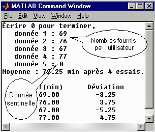

Contexte – Mesurer le temps parcouru par des prototypes de voiture électrique SherÉlec © alimentée par une seule des 5 piles LP2 © (lithium-plastique-platine) qui équipent normalement le véhicule. Elle roule sur l'autoroute à une vitesse constante de 100 km/h. Lorsqu'elle ne peut plus maintenir la vitesse, noter le temps en minutes depuis le début de l'essai, puis quitter la route à la prochaine sortie.
Spécifications – Écrire un script qui lit une à une les différentes valeurs mesurées en minutes et les accumule dans un vecteur. Lorsque l'utilisateur écrit zéro, le programme affiche la moyenne, toutes les données lues ainsi que la déviation en minutes de la moyenne pour chacune.

Après la lecture du problème, allouer 20 minutes pour le résoudre. Après cette période, examiner les items ci-dessous :